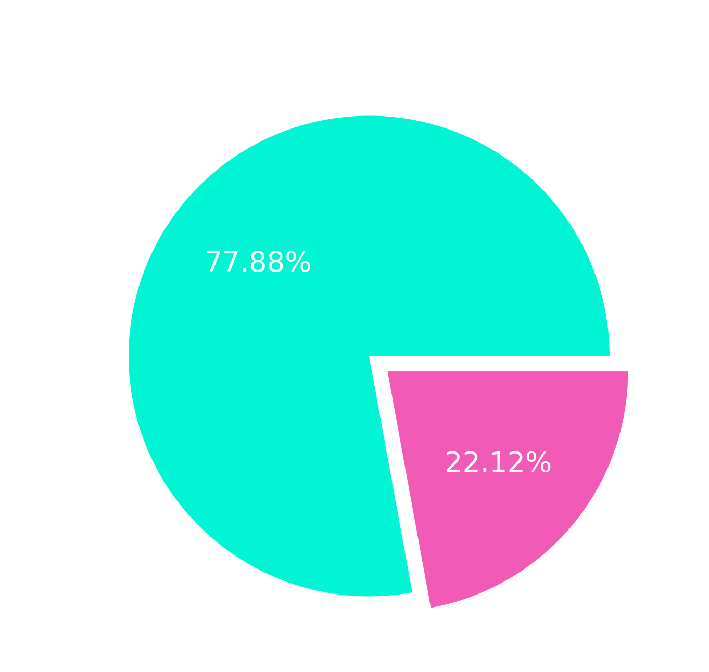
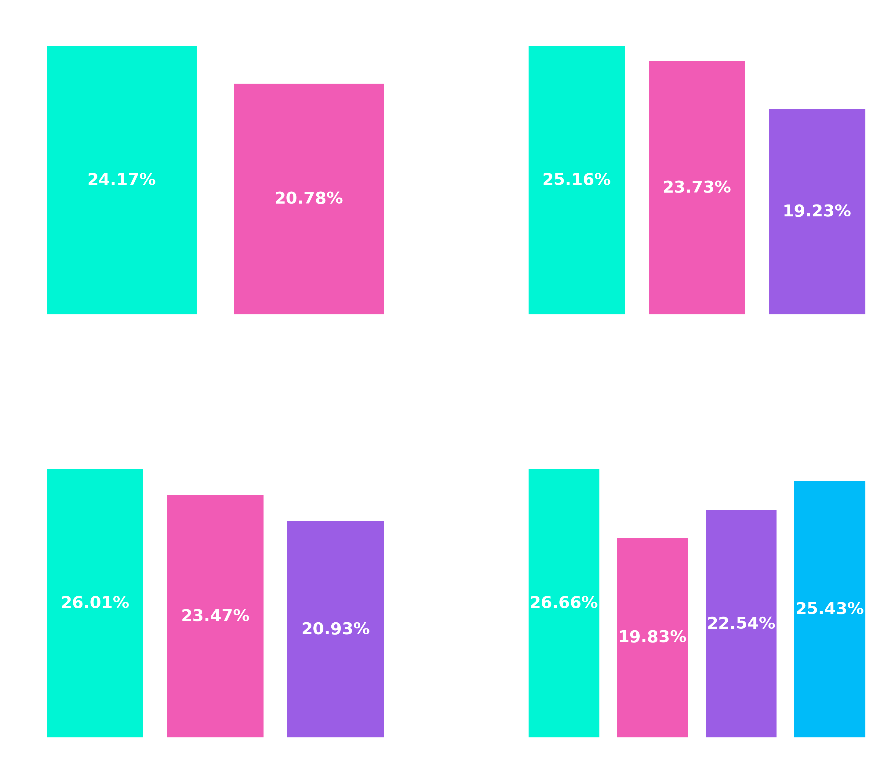
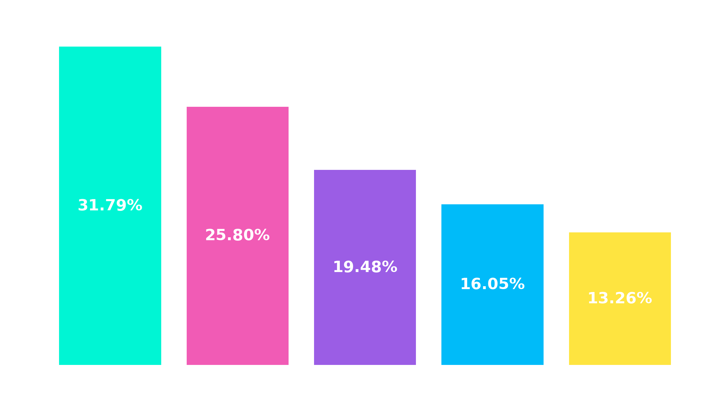
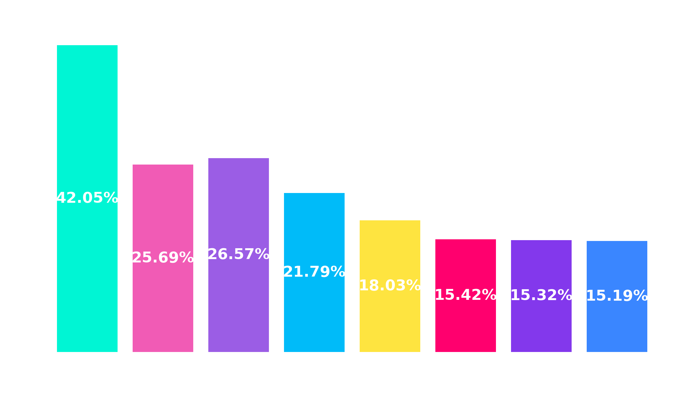

Problema
Análise de inadimplência de cartão de crédito é um desafio comum para instituições financeiras. O objetivo é identificar quais clientes têm maiores chances de se tornarem inadimplentes, para que medidas preventivas possam ser tomadas e assim reduzir perdas financeiras e fazer uma concessão de crédito mais segura.
A base de dados utilizada para essa análise é o "Default of Credit Card Clients Dataset", disponível no Kaggle, que contém informações de clientes de cartão de crédito, incluindo dados demográficos, histórico de pagamento e status de inadimplência. O dataset é composto por 30.000 registros e 24 variáveis, incluindo informações como idade, sexo, grau de escolaridade, estado civil, limite de crédito, histórico de pagamento e status de inadimplência. O objetivo é analisar esses dados para identificar padrões e fatores que possam indicar a probabilidade de um cliente se tornar inadimplente.
Resolução
Para identificar os fatores que mais contribuem para a inadimplência, foi preciso seguir as seguintes etapas:
1. Limpeza e Preparação dos Dados
- Tratamento de valores inválidos em variáveis categóricas (como EDUCATION e MARRIAGE).
- Conversão de códigos numéricos em categorias interpretáveis.
- Agrupamento de valores incoscistentes em categorias adeuquadas.
- Remoção ou filtragem de dados que poderiam enviesar a análise.
2. Engenharia de Variáveis
Uma parte central da análise foi a criação de variáveis que capturam melhor os comportamentos dos clientes, ao invés de analisar variáveis individualmente. Por exemplo:
a) Comportamento de Pagamento
- Criação de variáveis que analisam o histórico de atrasos nos pagamentos para identificar padrões de comportamento.
- Análise de Delinquency com defasagem para avaliar o impacto de atrasos passados no risco futuro.
b) Utilização do Crédito
- Cálculo da taxa de utilização média de crédito ao longo dos meses para avaliar o comportamento de gastos dos clientes.
c) Capacidade de Pagamento
- Cálculo da razão entre o pagamentos realizados e valores faturados para avaliar a disciplina financeira e a capacidade de pagamento dos clientes.
3. Análise Exploratória (EDA)
A análise exploratória dos dados foi fundamental para entender as relações entre as variáveis e identificar quais fatores estão mais associados à inadimplência. Foram criados gráficos para visualizar a distribuição dos dados e as correlações entre as variáveis.
Ferramentas Utilizadas
- Python
- Pandas
- Matplotlib
- Seaborn
- Excel
Resultados
Uma análise rápida na varável alvo revelou que a maioria dos clientes (77,88%) não se tornaram inadimplentes, enquanto 22,12% dos clientes se tornaram inadimplentes, como mostra a figura abaixo.

A partir disso, é necessário analisar quais fatores estão mais associados a esse comportamento, para que medidas preventivas possam ser tomadas e assim reduzir perdas financeiras e fazer uma concessão de crédito mais segura.
Para isso, a análise foi dividida em duas partes: variáveis demográficas, associadas a características individuais, e variáveis comportamentais que refletem o histórico de interações financeiras dos clientes no banco de dados.
1. Variáveis Demográficas

A análise das variáveis demográficas revelou padrões interessantes relacionados à inadimplência. Por exemplo, a distribuição por sexo mostrou que as mulheres apresentaram uma taxa de inadimplência ligeiramente menor do que os homens. Já a análise por grau de escolaridade indicou que clientes com níveis mais altos de educação tendem a ter taxas de inadimplência menores, possivelmente devido a uma melhor gestão financeira ou maior estabilidade econômica.
Entretanto, não é possível afirmar que essas variáveis por si só possuem relevância significativa para a inadimplência, pois a variação entre os grupos é relativamente pequena. Isso sugere que outros fatores, como comportamento de pagamento e utilização do crédito, podem ter um impacto mais significativo na inadimplência do que as características demográficas isoladamente.
2. Variáveis Comportamentais
Limite de Crédito
O limite de crédito foi realizada separando os clientes por faixas de limite, para avaliar o comportamento de inadimplência.

Como pode ser observado, os clientes com limites de crédito mais baixos apresentaram taxas de inadimplência significativamente maiores do que aqueles com limites mais altos. Isso pode indicar que clientes com menor acesso ao crédito estão mais propensos a se tornarem inadimplentes, possivelmente devido a uma menor capacidade financeira ou maior vulnerabilidade a choques econômicos. Essa análise sugere que o limite de crédito é um fator importante a ser considerado na avaliação do risco de inadimplência dos clientes.
Também indica que a estratégia adotada do banco até então tem sido eficiente, já que os limites mais baixos estão sendo concedidos para clientes menos confiáveis, o que ajuda a mitigar os prejuizos financeiros associados à inadimplência.
Utilização do Crédito
Para avaliar o impacto da utilização do crédito na inadimplência, foi calculada a taxa de utilização média de crédito ao longo dos meses para cada cliente, ou seja, a média das faturas normalizada pelo limite de crédito concedido. Essa métrica é importante para entender o comportamento de gastos dos clientes.

Os resultados apresentados mostram que clientes financeiramente mais disciplinados, ou seja, aqueles que utilizam uma menor proporção do limite, tendem a ter taxas de inadimplência significativamente menores. Com aqueles que utilizam acima de 90% tendo uma taxa de inadimplência duas vezes maior se comparados com clientes que consomem até 30% do limite.
Isso indica que a disciplina e organização econômica dos clientes deve ter um peso significativo no momento de conceder crédito, já que os mais responsáveis tendem também a cumprir com o pagamento de suas faturas.
Faturas Atrasadas
A quantidade de faturas em atraso se destaca como a variável comportamental mais relevante para predição de inadimplência. A partir de três atrasos, observa-se um salto significativo no default rate, caracterizando um claro ponto de inflexão no risco de crédito.

Esse padrão indica uma mudança estrutural no comportamento do cliente, que passa a apresentar maior propensão à inadimplência recorrente, possivelmente refletindo perda de controle financeiro ou redução do comprometimento com a quitação das obrigações.
Taxa de Pagamento
Essa análise consiste da taxa de pagamento total em relação a soma de todos os pagamentos realizados pelo cliente. A intenção é, a partir dela avaliar, se a capacidade de pagamento é um bom indicativo de inadimplência.

Pela análise gráfica, percebe-se que a taxa de inadimplência tende a estabilizar conforme a taxa de pagamento, ou seja, a taxa de inadimplência diminui conforme o cliente paga mais.
Essa establizição não nos dá bons indicadores de que esse é um fator de peso para a taxa de inadimplência, mas reforça a hipótese de que o atraso nos pagamentos é o fator mais crítico, pois conforme a taxa de pagamento tende a zero, o default rate tende a sair do controle.